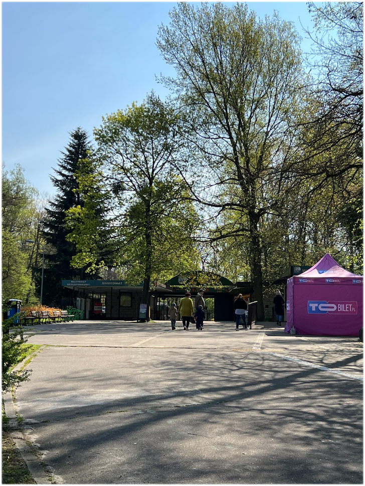
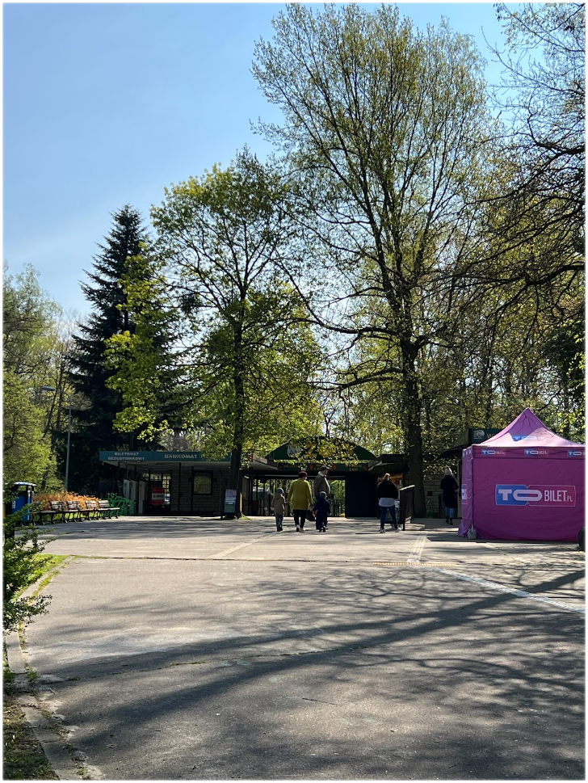

Nowe ZOO - Położony na Białej Górze, w pobliżu Jeziora Maltańskiego, prawie 117 hektarowy Ogród Zoologiczny - to wspaniały przyrodniczy krajobraz na stałe wpisany w panoramę Poznania. Zróżnicowany leśny teren z jednej strony pozwala stworzyć dla mieszkających tu zwierząt warunki zbliżone do naturalnych, z drugiej uatrakcyjnia zwiedzającym ich obserwowanie.
Ponad 40% prezentowanych w poznańskim ogrodzie zoologicznym gatunków jest zagrożonych wytępieniem w skali globalnej lub lokalnej, a około 100 gatunków objętych jest Europejskim Programem Hodowli Gatunków Zagrożonych.